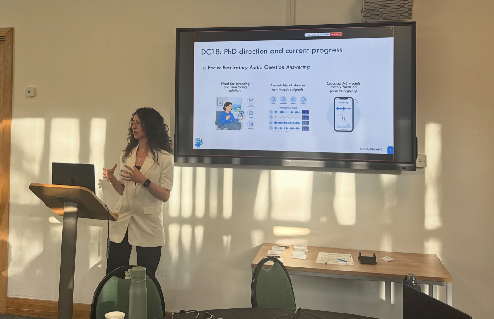

MSCA ANT Network meeting
Towards Trustworthy Respiratory Audio Question Answering
Brunel University of London, UK

At the third meeting of the Marie Skłodowska-Curie Doctoral Network ANT, hosted by Brunel University of London, I presented our latest results and future directions on respiratory audio question answering for health assessment, focusing on our findings on trustworthiness and the next steps towards more reliable models.
The meeting brought together doctoral researchers from across Europe working on embedded AI systems and applications, together with research contributions from STMicroelectronics.